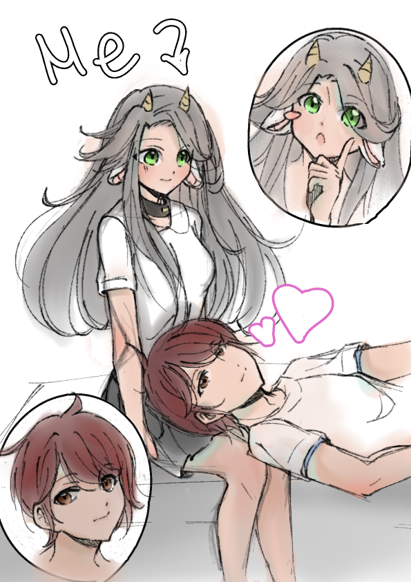

<!DOCTYPE html>
<html>
<head>
  <title>Coding Assignment!</title>
</head>
</html>
<body style="background-color: #CFD8DC;"

</html>
<div style="text-align: center;">

    
  
  </div>


<html>
<head>
<style>
h1 {text-align: center;}
</style>
</head>
<body>
<h1 style="border:2px solid Dodgerblue;">Angel Dela Cruz</h1>
</body>
</html>


<h2>Brief Introduction</h2>

<p>I’m Angel Dela Cruz, I have a brother and two wonderful parents who take great care of us.  I love to read, play, and draw during my free time. I don’t like going outside because I'm an introvert. Also I love helping my parents by doing my daily chores.</p>

<h2>Wht did you enroll as an ICT student? Why not other track or stands?</h2>

<p>I enrolled as an ICT student because we have a computer at home and I thought it would be fun to learn some codes here and there(might make a game too?). I prefer not having an overly complicated strand like HUMMS or GAS that might suck the life out of me since I have to consider managing my time and my time doing schoolwork.</p>

<h2>What is your dream job? How do you think this course will help you in pursuing your career?</h2>

<p>My dream job is to become an artist! And having a bit of knowledge because of my creativity I’d like to be a well rounded student to have a bit of every knowledge is my goal. I also want to have this experience because I was inspired by a game that I play and maybe dip my toes in to make one as well!</p>

<h2>To whom are you dedicating your success in finishing course? Yourself, family, friends, special someone etc.  Why?</h2>

<p>I am dedicating my artistic life to my family because they helped me through thick and thin! And a little to myself because I’m a bit of a perfectionist myself. Though I’d love to help my family strive and make money to provide them a good and healthy life for the future!</p>
